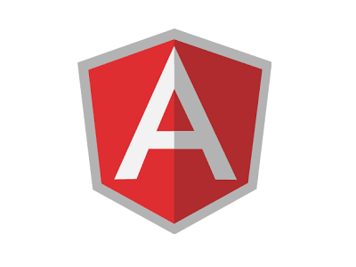
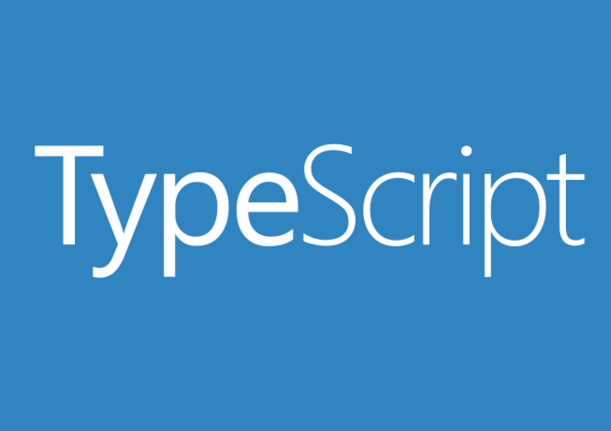

EXPERIENCE WITH






I am a Computer Scientist
Welcome to my website. The purpose of this site is to present all my work and experiences in a single place that is easy to navigate and easy to understand.
My Name: Gary Mac Elhinney
Education
school MSc Computer Science
I am currently enrolled in a Masters Of Science degree in University College Dublin Ireland and am majoring in Software Developlment. Expected graduation is September of 2018.
2017 - To Dateschool BSc Computer Science
I have just finished my Undergraduate Computer Science degree and graduated with a 1st Class Honours.
2013 - 2017Hobbies
pool Swimming
Swimming is by far my favourite hobby. I've been swimming regularly since I was five years old and have
never
lost interest in the sport. My plan on day is to transition into Triathlons once I have the required
time.
My biggest achievement in swimming was coming first in Meath in the Under 14 freestyle event and, in
turn,
placing fourth in an all-Leinster final. Nowadays I don't really swim competitively, I mainly swim now
for
overall fitness.
directions_run Running
Running is a sport that I have only been doing for the past few years. Recently I have stopped running competitively and am focusing more on my swimming training, but when I was training regularly my best 5-kilometer run was during the Meath cross-country racing season where I did one of the races in 18mins 25secs.
Gaming
I really consider video games to be the primary reason why I decided to become a Computer Scientist.
My interest in Science as a whole is the reason why I decided to do a more general Computer Science
degree
as appose to focusing directly on game development.
It was really games like StarWars Battlefront, Uncharted, Halo, Battlefield and Need for Speed that
influenced
my decision to study Computer Science. Uncharted, in particular, still strikes me as one of the most
beautiful
game series to date. Most of the games I play now are strategy based. The games Dota2 and Starcraft2
would be
my favourite games at present.
My love for gaming has inspired me in many ways over the course of my life. One such example would be my
thesis, in which I developed an AI that uses Neural Networks and Genetic programming to learn how to
play
a very old MS-DOS game called Wolfenstein3D.
Listed below are my previous working experiences
QA System Engineer Intern
My main responsibility at Corvil was to design and develop a full-stack application which will be
used to view system accuracy results, which will result in reduced reviewing periods before GA software releases
so that critical software upgrades can be published quicker. I built the application with AngularJS and
TypeScript for the frontend and Node.JS, MySQL and Python for the backend.
I also began migrating Corvil's old test framework for aggregation-tap accuracy to their new framework,
which will allow automated and more frequent execution of these tests so that Corvil's system team can
have up to date results on a more frequent basis.
Android Developer Intern
In Insight, my task was to built an android application that was capable of connecting to
several
Shimmer sensors and record the data onto the phone that the application was installed on.
The
application itself had to be able to establish bluetooth connection to the sensors, collect
the streamed data from the sensors, store the data and review each of the sensor's streamed
data.
The application itself is currently being used to record data from professional Rugby
players.
The underlying PhD project that the application was built for is hoping to show correlations
between concussions and the effect they have on Professional Athletes ability to
self-balance.
Listed below are some of my previous works
I'd love to hear from you